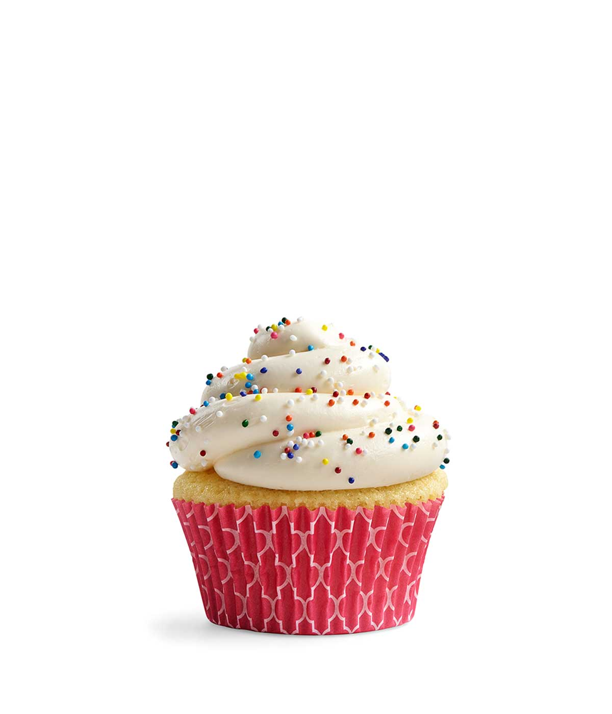

Vive les cupcakes
J'ai découvert les cupcakes lors d'un voyage à
New York
... et depuis c'est une véritable passion. Sur mon site, vous assurez tout
sur les cupcakes!
Un cupcake? c'est ça :

un cupcake
Délicieux non? Sur mon site, je vous présenterai:
- Les différentes variétés de cupcakes
- Leur histoire
- Leurs recettes